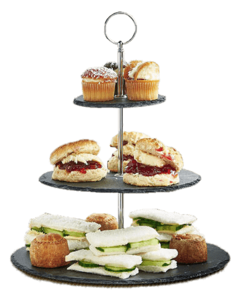
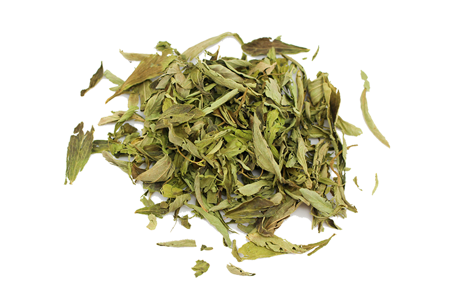
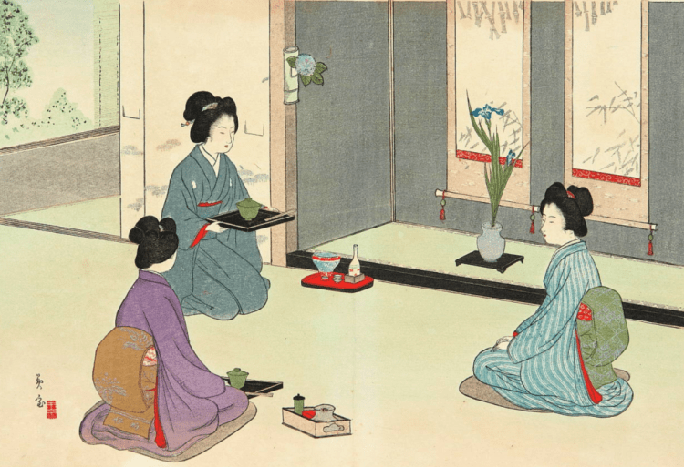
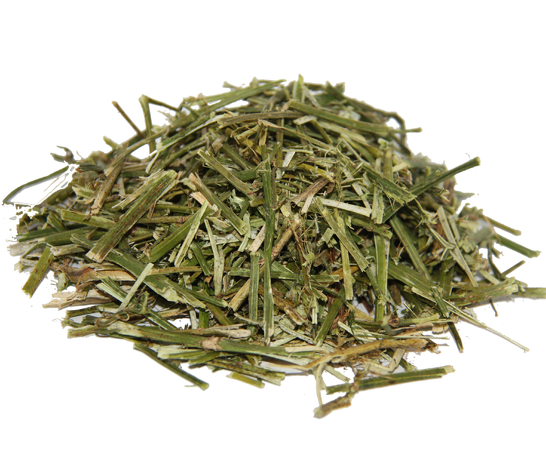
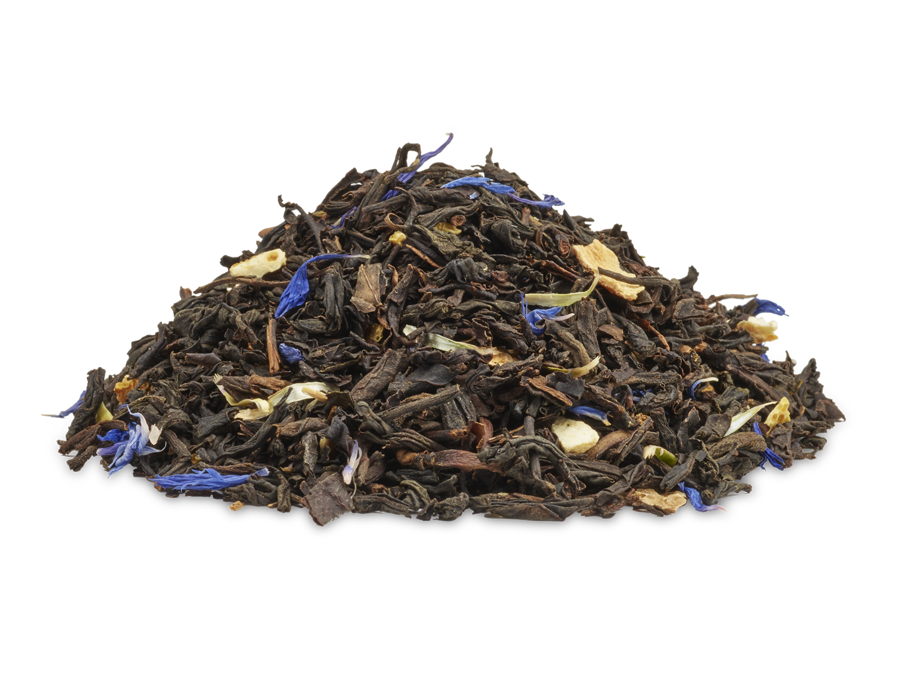
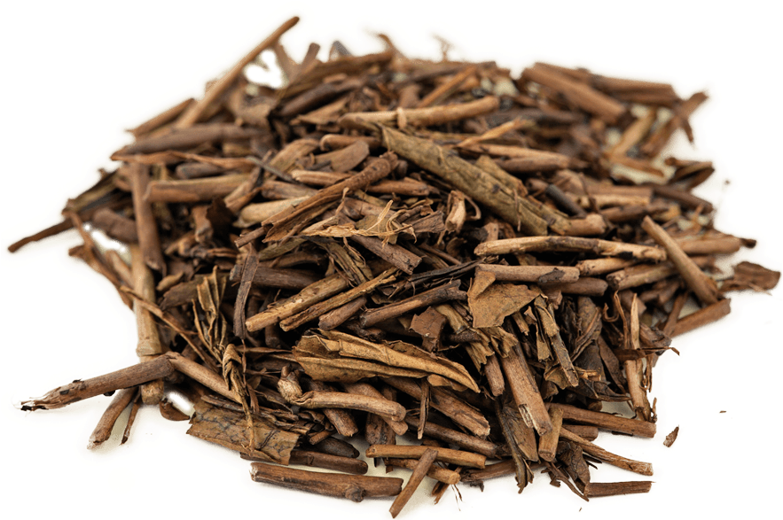
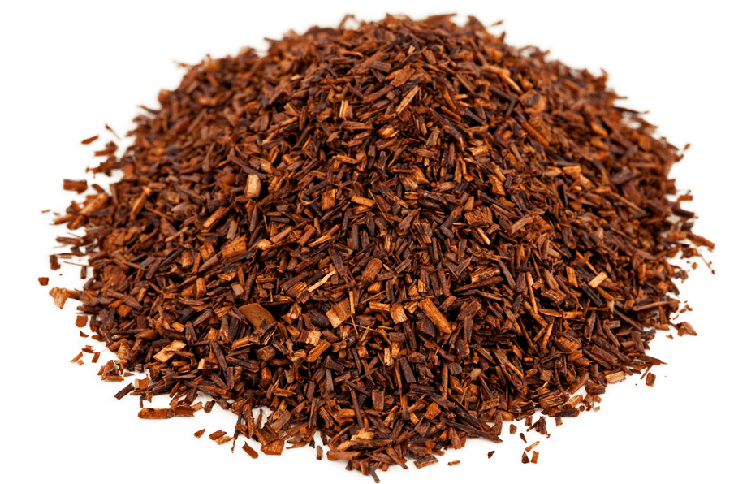

Dictionary
The primary types of tea are: black tea, green tea, white tea, oolong tea, pu-erh tea, purple tea, and herbal infusions. However, there is more to tea than just those types. Below you will find a glossary of all tea.
A B C D E F G H I J K L M N O P Q R S T U V W X Y Z
Anhui
A tea-producing region in Eastern China known for both green and black teas such as huangshan maofeng, luan guapian, and keemun.
Assam
A region in Northeast India known for producing its namesake black tea that has a brisk, malty brew.
Afternoon Tea
A mid-afternoon light meal consisting of small savories, scones, and other sweets. It’s said to have originated with The Duchess of Bedford in the 1840s, to curb her mid-afternoon hunger pangs. Please don’t confuse this with ‘high tea’, as so many people do.
Bancha
A popular type of Japanese green tea harvested between summer and autumn.
Bergamot
An aromatic citrus fruit commonly used to flavor Earl Grey tea
Black Tea
One of the 6 main categories of tea, it is grown and processed all over the world. Black teas are fully oxidized and impart a reddish brew, which is why it’s called ‘hong cha’ (red tea) in Chinese. They are full-bodied, and can have sweet, toasty, and earthy flavors.
Bloom
A sheen on the processed tea leaf, a sign that the tea has been well manufactured and not over-handled
Body
Also called ‘mouthfeel’, this is the thickness of the tea in your mouth. It can be light, medium, or full
Baozhong
A lightly oxidized, twisted leaf tea from Taiwan known for its floral flavor. It may also be referred to as Pouchong.
Bi Luo Chun
A famous Chinese green tea picked in early spring and rolled into a tight spiral shape, which is why its name translates to ‘green snail spring’.
Boba Tea
You probably know it as ‘bubble tea’, a sweet tea-based drink created in Taiwan in the 1980s. The boba ‘bubbles’ refer to the foamy layer created from shaking the tea with milk and ice. Tapioca pearls are often added and are also referred to as ‘boba’.
Caffeine
A bitter chemical produced by the tea plant to ward off insects. It acts as a stimulant when consumed in tea.
Camelia Sinensis
The botanical name for the plant that gives us tea! While there are many varieties, all black, white, yellow, green, oolong, and puerh teas come from the leaves of this plant.
Ceylon
The original name for Sri Lanka, it refers to teas produced in this area, usually attributed to black tea.
Chrysanthemum
A dried flower popular in China and other areas of east Asia used as an herbal infusion. It is also consumed to help with various ailments.
Cha
The Chinese word for tea.
Chai
The Indian term for tea. Many people in the US think ‘chai’ means spiced tea, but that’s referred to as ‘masala chai’ in India. When you ask for a ‘chai tea’ you are actually asking for ‘tea tea’!
Chanoyu
The Japanese tea ceremony, translates to ‘hot water for tea’. A formalized ceremony for whisking matcha in water and serving to a guest. It takes years of practice to become a chanoyu master.
CTC
Stands for ‘cut (or crush), tear, curl’, a machine method of processing black tea into pellet-like broken leaves that creates a quick, strong infusion.
Cold Brew
One of our favorite ways to make iced tea- allowing the leaves to infuse in cold water in the fridge for at least 12 hours and can be left for much longer. This method creates a tea with less bitterness and a sweet aftertaste.
Darjeeling
A famous tea producing region in India near the Himalayan mountains known for the unique flavor profile of their black teas. Only teas from this region can be called Darjeeling (similar to sparkling wines from Champagne).
Dragonwell
One of the most famous type of Chinese tea, early spring leaves are pan fired to create a leaf that is flat in appearance and has a nutty, delicate flavor. It is named after the Dragon’s Well (translates to long jing), a landmark where the tea originated.
Dust
Tiny bits of tea left over after processing the leaves, so small they basically look like dust. This is commonly added to commercial tea bags.
Dong Ding
A traditional medium-oxidized oolong from central Taiwan. Named after the mountain it is grown on, it translates to ‘frozen summit’. Can also be spelled Tung-Ting.
Earl Grey
Black tea blend scented with bergamot (usually bergamot oil). There are differing stories as to how the tea got its name.
Elevenses
A British mid-morning snack break at 11:00am, usually consisting of tea and a scone or cake. Also, the name of a hobbit’s 3rd meal of the day.
English Breakfast
Strong blend of black teas that pairs well with rich breakfast foods such as eggs and bacon. The blend’s name was actually coined in NY, not in Britain.
Fannings
Small particles of tea, slightly larger than ‘dust’ (see above) that have been sifted from the loose leaves. Often used in teabags. The name comes from the large fans used to separate the particles from the leaves.
Fermentation
This can be a tricky one. Sometimes you’ll see oxidation incorrectly referred to as fermentation. But it is a microbial process used in ‘dark’ teas such as pu’erh where the leaves undergo fermentation after the production process. This can take months to many years.
Flush
The time of year when leaves are ready to be plucked during a harvest season. A ‘first flush’ is usually early spring, ‘second flush’ later in the spring, and so on. You’ll often see this in reference to Darjeeling teas.
Formosa
Refers generally to oolong teas produced in Taiwan. The term is Portuguese for ‘beautiful’, which was the name given to Taiwan by Portuguese explorers in the late 1500s.
Gaiwan
The Chinese term for a lidded bowl used to infuse tea. It is used for quick infusions with a large amount of leaf. Often used in Gongfu tea preparation (see below).
Genmaicha
A type of Japanese green tea (usually made with bancha, see above) with added toasted rice. When the rice is toasted it sometimes pops and looks like popcorn.
Gongfu tea
The term refers to the Chinese method of tea preparation and also the Chinese tea ceremony. It involves infusing a large amount of leaf in either a small teapot or gaiwan, using many quick infusions. Gongfu translates to ‘with skill’.
Grandpa Style
A simple and effective method of brewing tea leaves. Add whole leaves and hot water to a tall glass, allow to infuse, and drink. Your teeth will act as a filter while you sip. Simply refill the cup with hot water once it's about 1/3 finished, and keep drinking all day. It's a popular way to brew tea in China, and rumor has it, particularly among the grandpas. Hence the name! Try it with any type of tea, but this method works best with teas that don't get too astringent while sitting in water for an extended period of time.
Green Tea
One of the six main types of tea, it originated in China but is grown and produced all over the world. The leaves are heated before any oxidation can occur, preserving their green color. The heating process can either occur through steaming or pan-firing.
Gyokuro
A high-grade Japanese tea that is shaded a few weeks before harvesting, forcing the plants to produce more chlorophyll which creates a deep green leaf, packed with umami flavor.
Hibiscus
A popular flower used to create a bright magenta-colored, tart herbal infusion. It is grown and consumed all around the world.
High Tea
Often mistakenly referred to as ‘afternoon tea (see above)’, it is actually a nourishing meal served in the late afternoon / early evening that originated with the British working class. ‘High’ refers to the fact that it’s served on a regular high table, not the ‘low’ tables used for a relaxing afternoon tea with a comfortable couch or garden seat.
Hojicha
Japanese roasted green tea, often roasted sencha or bancha. It has a mellow, toasty flavor very different from steamed Japanese teas.
Infusion
The process of steeping an ingredient in water or alcohol to create a drink. This can be for tea or any variety of herbals.
Iced Tea
Any tea or herbal infusion served cold. It can be cold brewed (see above), or prepared hot and then cooled with ice.
Jasmine
An extremely aromatic flower commonly used in scenting tea, typically produced in China. Usually found with green or black teas, the tea can be scented with blossoms, or sprayed with a Jasmine oil.
Kill Green
The step during tea processing where the leaves are heated to halt oxidation. With green teas this happens right away, to keep the leaves vibrant and green and prevent any oxidation.
Lapsang Souchong
A Chinese black tea originally from the Wuyi mountains in China, known for its smoky aroma and flavor. It is traditionally smoked over pine to impart the characteristic smokiness.
Matcha
A powdered green tea made by grinding high grade shade-grown leaves. Traditionally prepared by whisking into hot water.
Milk Tea
Many areas of the world have versions of milk tea. However, it most often refers to the Taiwanese bubble tea preparation (see above) with or without the tapioca pearls.
Nose
The aroma of the brewed tea.
Oolong
One of the 6 main categories of tea, oolongs fall between green and black teas as they are partially oxidized, anywhere from about 5%-70%.
Orange Pekoe
Western black tea grading term that has nothing to do with citrus. It simply refers to whole leaf tea and has nothing to do with flavor. The words are most likely a mistranslation in the 18th or 19th century from Cantonese, but no one knows exactly how it came about.
Oxidation
When the leaves are bruised and exposed to the air, it causes a chemical reaction that results in browning of the leaf, creating aromatic flavor compounds. Similar to what happens when you cut into an apple and let it brown.
Pan-fired
Refers to the tea processing style of heating the leaves in a wok or kettle drum.
Pekoe
Similar to ‘orange pekoe’ above, a western tea grading term for small, young tea leaves.
Plucking
Referring to the harvest of tea leaves from the plants. It can refer to the type of leaves plucked: buds only, one leaf and a bud, leaves only, etc.
Polyphenols
Natural chemical compounds found in tea leaves that have an impact on the flavor of the tea. They contain antioxidants.
Pu’erh
One of the 6 main categories of tea, this is a post-fermented tea that has undergone a special microbial process after the tea has been dried. In order to be called Pu’erh, it must come from Yunnan, China. If a post-fermented tea comes from another region, it will simply be called ‘dark tea’.
Pitcher
Used for serving tea in the gongfu style, tea is decanted from a gaiwan or small teapot into the pitcher, and then served into individual cups. Decanting into a pitcher allows for each person to enjoy a cup with the same flavor. May be referred to as a cha hai, sharing pitcher, or gong dao bei.
Rolling
A step in processing tea that bruises the leaves in order to start the oxidation process. It is also a step in shaping the tea.
Rooibos
An herb from South Africa that is made into an herbal infusion. It is also called red tea, or red bush tea. It can be found as the plain herb or with added ingredients.
Semi-Fermented Tea
This refers to a microbial process usually referring to yellow tea (see below). It may also incorrectly refer to semi-oxidized teas such as oolongs.
Sencha
The most popular green tea in Japan. Harvested in springtime, the tea is steamed to retain its bright green color and flavor. The leaves are rolled into needle-like shapes.
Specialty Tea
Generally referring to artisan made loose leaf tea, usually single estate and made in small quantities.
Steeping
the process of allowing the tea leaves to infuse into the water, imparting flavor, aroma, mouthfeel, and color. This can be done fairly quickly with hot water, or slowly as a cold brew.
Strainer
A device to separate the tea leaves from the steeped tea. It can be a removable mesh strainer inside a teapot, or a metal strainer placed on the teacup to catch leaves while pouring.
Taiwan
An island off the coast of mainland China, also known as Formosa since 16th century. It's also where we get all of ours teas.
Tea
Leaves from the Camellia Sinensis plant. Can be processed into white, green, oolong, yellow, black, or pu’erh tea.
Tea Bags
A porous bag (often paper, plastic, or silk) that contains tea dust, fannings, broken leaves, or sometimes whole leaf tea.
Té
The word for tea in Taiwanese Hokkien, a Chinese dialect originating from coastal Southern Fujian, spoken by over 70% of the population in Taiwan.
Tea Drunk
It's really a thing! No, it's not like being drunk on alcohol. It's more of a giddy, relaxed feeling you get after indulging in many cups of tea. Some people say it only happens when drinking aged and/or fermented teas. Some say it happens with all sorts of teas. Why does it happen? Some claim it's the caffeine, some claim it's the L-Theanine. No one really knows for sure. But trust us, you'll know it once it happens to you!
Terroir
A French word also used for wine, it encompasses the circumstances of a tea plant that influences its flavor and characteristics. Factors such as the climate, soil, environment, and elevation.
Tannin
One of the polyphenols (see above) found in tea. It can create astringency and a drying sensation on the palate.
Ti Kuan Yin
A famous Taiwanese oolong that translates to “Iron ‘Guanyin’”, the Goddess of Mercy. The tea can be green and floral, or slowly roasted.
Tea Caddy
Any vessel for storing tea. When tea was introduced to the west, it was extremely expensive and kept in locked decorative caddies. Early tea caddies were made of porcelain and later made from wood and pewter.
Tisane
Anything that is not from the camellia sinensis plant but is infused into hot water. It is not considered ‘tea’. Herbal teas and rooibos among others, fall into this category.
Two Leaves and a Bud
This refers to the tea plucking style. Early spring pluckings are usually a bud only, or a bud and one leaf, or a bud and two leaves.
Twisted
A term to describe a leaf shape resulting from the rolling process.
Uplifting
A feeling that we have after drinking a lot of good Taiwanese tea.
Vitamin C
A vitamin that is found most common on Green Tea... Also in Oranges and Kiwi's.
White Tea
One of the 6 main types of tea. White tea is the least processed tea. After plucking it is withered and dried. The leaves do not go through an oxidation process.
Withering
The first main processing step after plucking, the leaves are spread out either indoors or outdoors, and allowed to wilt and reduce their moisture content. This controlled step helps prepare the leaves for further processing.
Yellow Tea
One of the 6 main types of tea, it is the most difficult to find as it is time consuming to produce. It is processed like a green tea but then a ‘wet piling’ microbial fermentation step is added. It produces a mellow, smooth tea with a medium body.

Yixing
A region of China known for its unique clay generally called ‘zisha’ (purple sand). This clay has been used since the Song dynasty to create unglazed teapots and other teaware.
Yixing teapots are coveted by tea enthusiasts as the unglazed interior absorbs the natural oils in the tea and over time the pot will take on the flavor of the tea brewed in it.
Yunnan
A Southwestern province of China with many tea-producing regions. Yunnan is well known for pu’erh tea, and black and green teas are also produced here.
Zen
A state of "no-mindness"